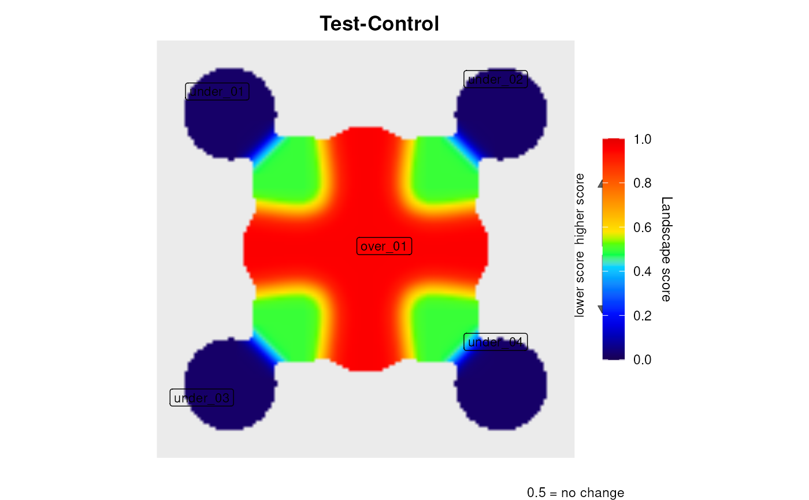

A minimal 9-node star network with a known, asymmetric expression pattern. The central hub and its four closest spokes are strongly over-expressed (Test = 200, Control = 10); the four outer corner nodes are strongly under-expressed (Test = 5, Control = 200). The expected landscape shows a clear peak at the centre and valleys at the periphery.
Two tab-delimited files in inst/extdata/:
hub_network.datMedusa DAT network file with 9 nodes
(HUB, N1-N8) and 8 edges (all connecting to HUB).
Node coordinates place the hub at (0.50, 0.50) and spokes at increasing
radial distances.
hub_expression.datTab-delimited expression file with
columns ID, Test, Control. Inner nodes
(HUB, N1-N4): Test = 200, Control = 10. Outer nodes (N5-N8):
Test = 5, Control = 200.
Simulated data generated for unit testing. No biological meaning.
NULL (this object documents data files, not a function)
With default parameters (signal_mode = "ratio"):
score(HUB) > all spoke scores > 0.5
score(N5) ~ score(N6) ~ score(N7) ~
score(N8) < 0.5
Peaks detected over the over-expressed core (HUB and N1-N4 all reach the same maximum, so several are reported); valleys near N5-N8.
# \donttest{
hub_net <- file.path(system.file(package = "levi"),
"extdata", "hub_network.dat")
hub_expr <- file.path(system.file(package = "levi"),
"extdata", "hub_expression.dat")
res <- levi(
networkCoordinatesInput = hub_net,
expressionInput = hub_expr,
fileTypeInput = "dat",
geneSymbolInput = "ID",
readExpColumn = readExpColumn("Test-Control"),
contrastValueInput = 50,
resolutionValueInput = 50,
zoomValueInput = 50,
smoothValueInput = 50
)

head(res$scores)
#> Gene X Y LandscapeScore Rank
#> 1 HUB 0.50 0.50 0.9524 1
#> 2 N1 0.50 0.70 0.9524 2
#> 3 N2 0.70 0.50 0.9524 3
#> 4 N3 0.50 0.30 0.9524 4
#> 5 N4 0.30 0.50 0.9524 5
#> 6 N5 0.85 0.85 0.0244 6
# }